June Local installer mockups
Faithful renders of the real installer UI. Regenerate with capture.py.
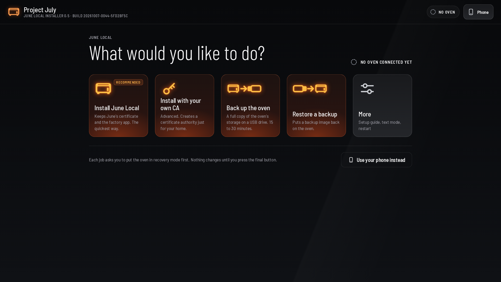
June Local installer home. The header shows the version and build; the tiles are Install June Local, Install with your own CA, Back up, Restore and More.
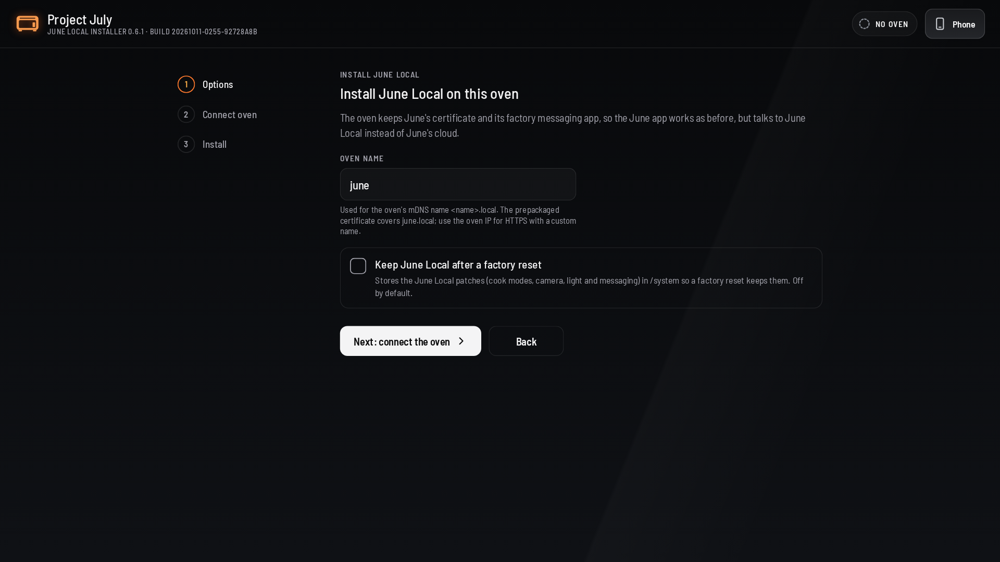
Basic install: the oven name (default june) and the persistence option. The project CA is added to the oven's trust store and the factory messaging app stays in place.
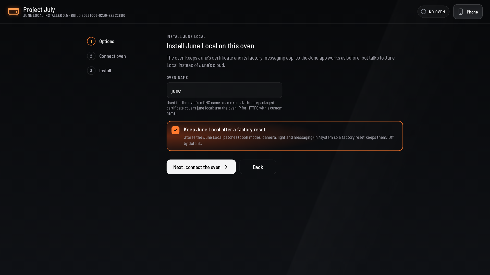
Persistence selected: 'Keep June Local after a factory reset' stages the cook-modes, camera, light and messaging patches in /system so a factory reset keeps them.
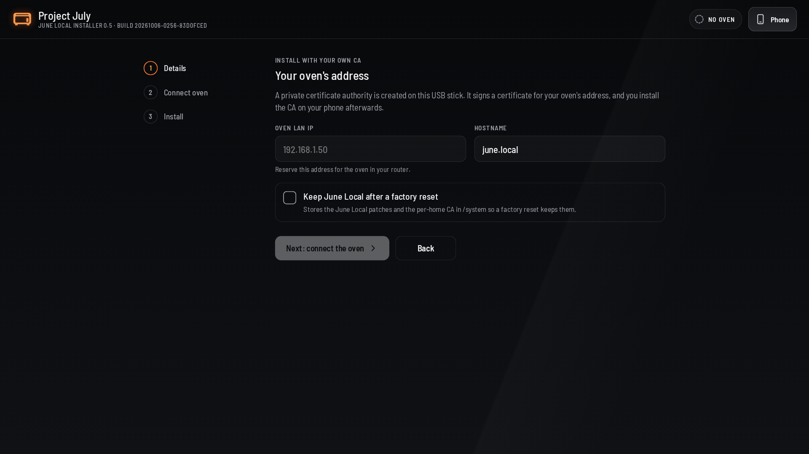
Custom install with a per-home CA: the oven LAN IP and hostname. The hostname defaults to june.local.
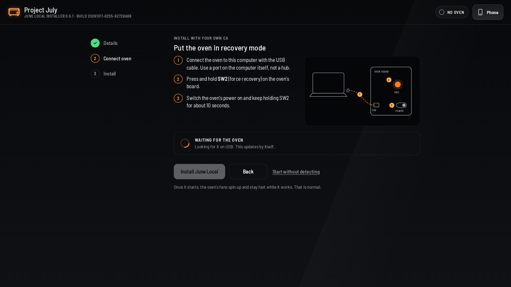
Steps on the left, the USB/SW2 illustration on the right, and the oven-found box below. Waiting for RCM mode.
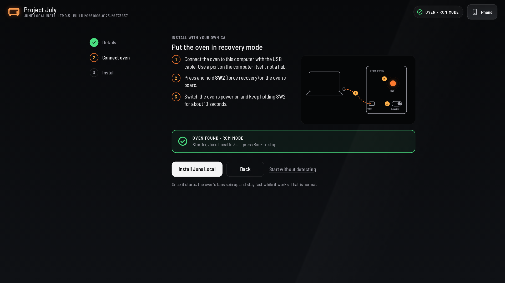
The oven is detected; the box counts down from 3 seconds and starts the install automatically. Back cancels the countdown.
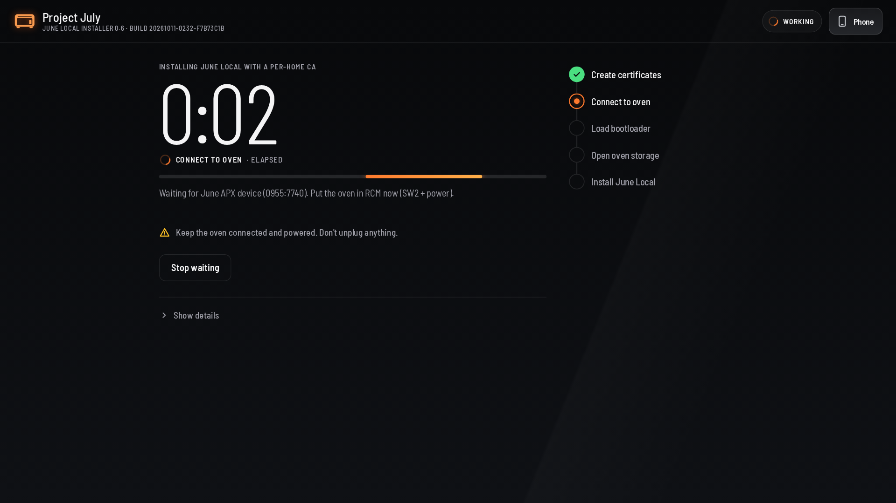
Progress, elapsed time and the step tracker while the installer runs. The fan note explains that the fans spin up and stay fast.
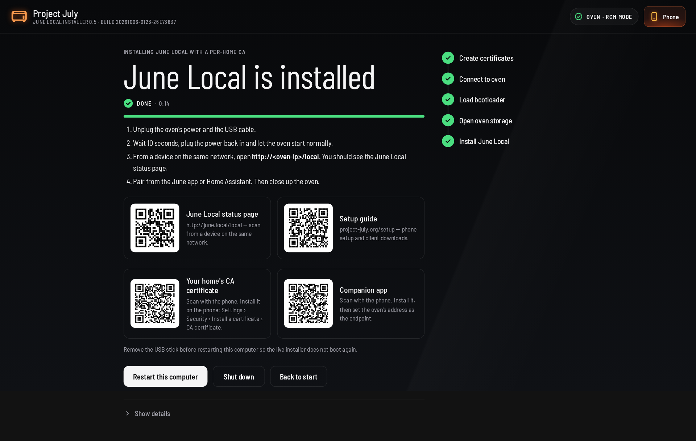
Success screen with the restart/shutdown buttons and QR codes for the oven status page, setup guide, CA certificate and companion app (phone access on).
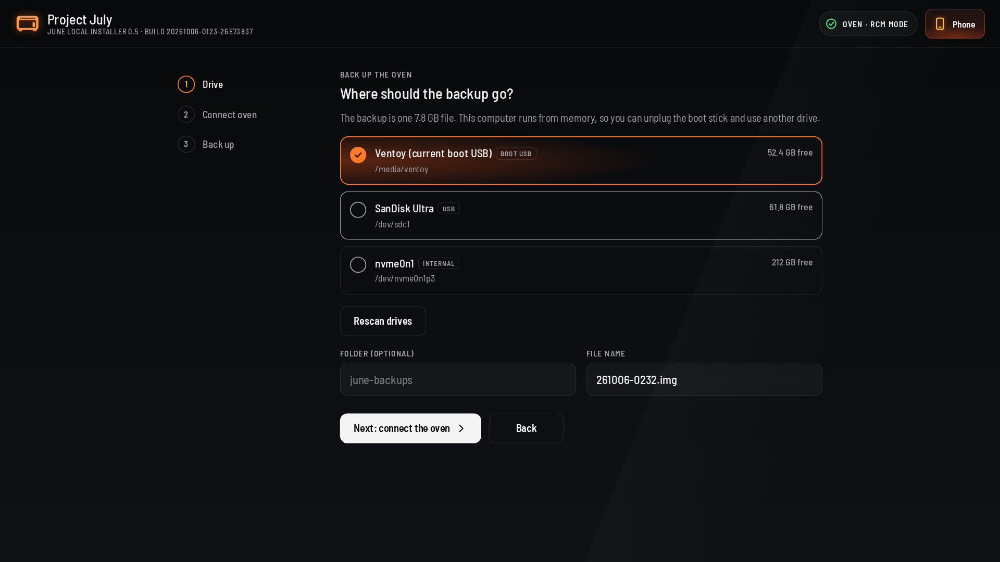
Choose the backup drive, folder and file name. The current boot USB is listed and marked as such.
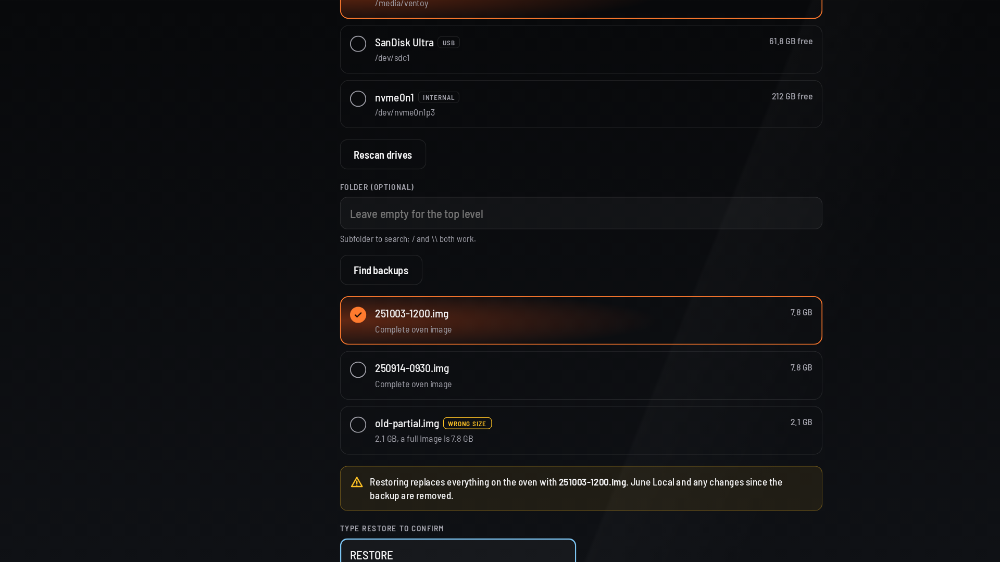
Restore: choose the backup image and type RESTORE to confirm. The warning explains that the oven is overwritten.
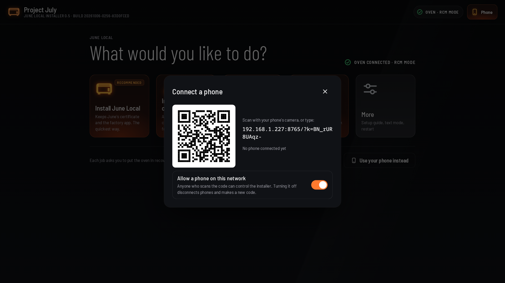
Connect a phone: the QR code opens the same installer on the phone so jobs can be started and followed from there.